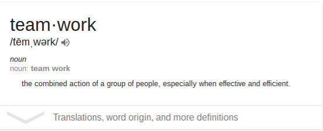
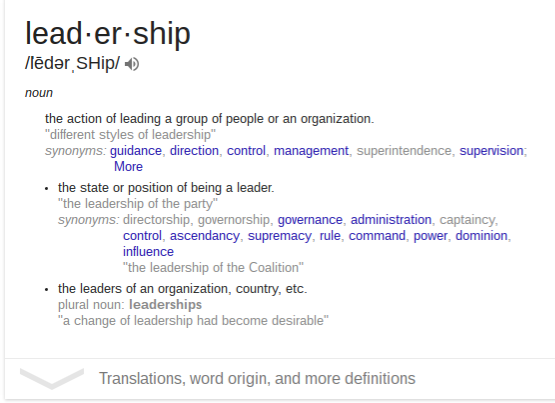

Code Panthers is a ground made up of 4 young leaders. We are young inventors building upon our techology experience. We belive that coding is a different way to express diffent personalities, based off a webpage. In order to be completely succesful in all tasks we attempt, we believe that having a solid foundation in teamwork and leadership skill is the key to suceess. Leadership is not being in control but influencing the whole team to be better. We believe that teamwork is working together and pushing each other to do
better. By having skills in our own diffrent ways we can be one of the greatest teams out there.
Teamwork

Famous Quotes about Teamwork
"Talent wins games, but teamwork and intelligence win championships." --Michael Jordan
"Teamwork is the ability to work together toward a common vision. The ability to direct individual accomplishments toward organizational objectives. It is the fuel that allows common people to attain uncommon results." --Andrew Carnegie
"Coming together is a beginning. Keeping together is progress. Working together is success." --Henry Ford
Leadership

Famous quotes about Leadership
Ultimately, leadership is not about glorious crowning acts. It's about keeping your team focused on a goal and motivated to do their best to achieve it, especially when the stakes are high and the consequences really matter. It is about laying the groundwork for others' success, and then standing back and letting them shine. --Chris Hadfield
A leader is best when people barely know he exists, when his work is done, his aim fulfilled, they will say: we did it ourselves. --Lao Tzu
The key to successful leadership today is influence, not authority. --Kenneth Blanchard